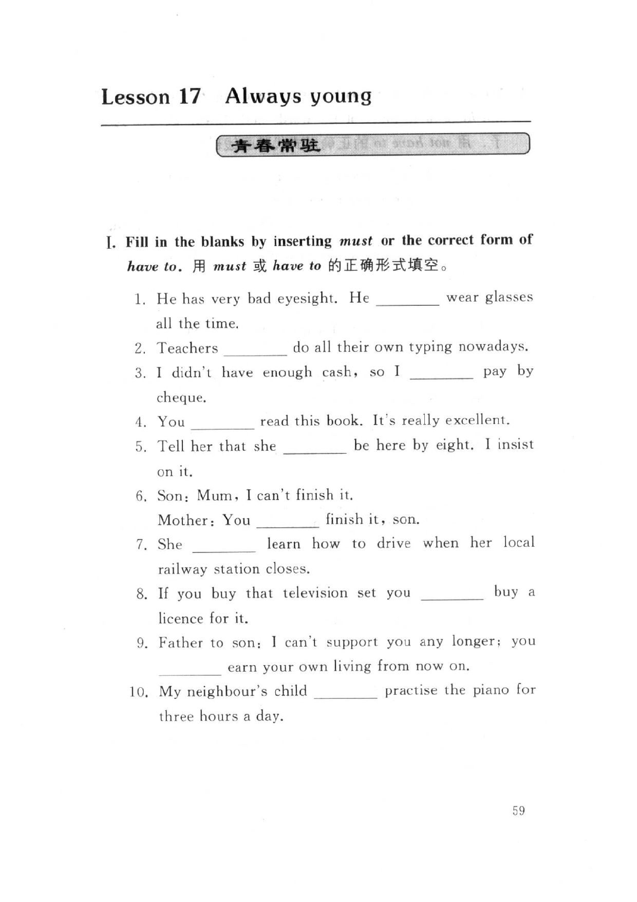
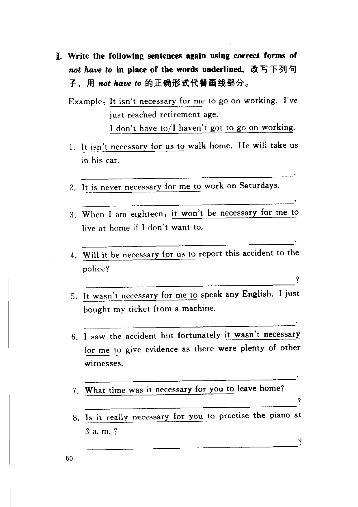
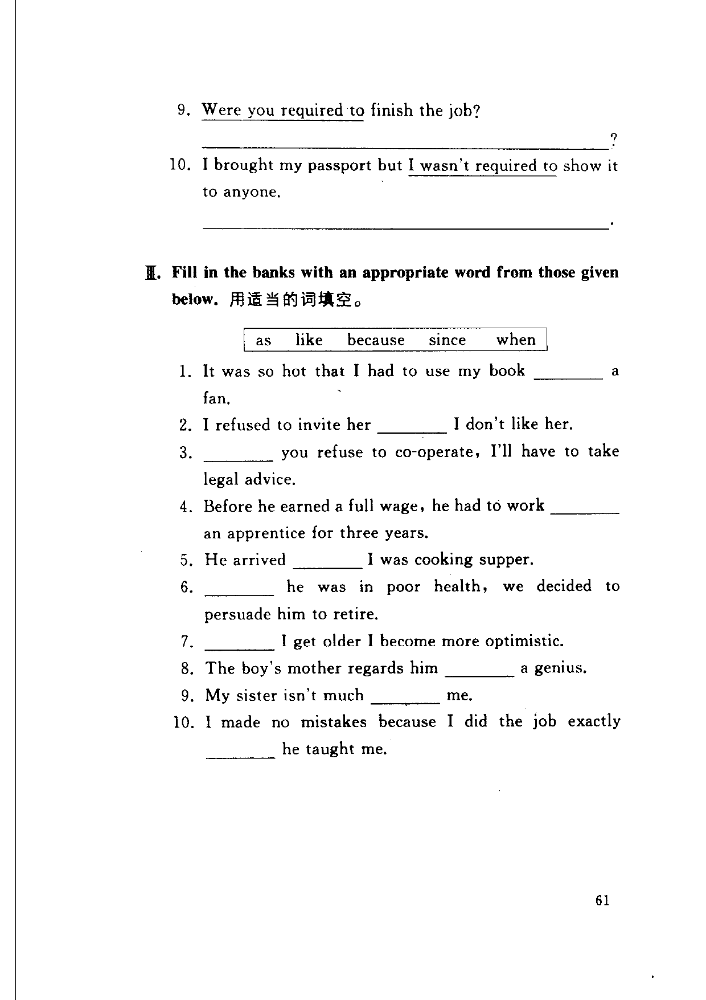

Grammar exercises · 语法练习
I. Fill in the blanks by inserting must or the correct form of have to.
用 must 或 have to 的正确形式填空。
-
I. must/have to — He has very bad eyesight. He wear glasses all the time.
-
I. must/have to — Teachers do all their own typing nowadays.
-
I. must/have to — I didn't have enough cash, so I pay by cheque.
-
I. must/have to — You read this book. It's really excellent.
-
I. must/have to — Tell her that she be here by eight. I insist on it.
-
I. must/have to — Son: Mum, I can't finish it. Mother: You finish it, son.
-
I. must/have to — She learn how to drive when her local railway station closes.
-
I. must/have to — If you buy that television set you buy a licence for it.
-
I. must/have to — Father to son: I can't support you any longer; you earn your own living from now on.
-
I. must/have to — My neighbour's child practise the piano for three hours a day.
II. Write the following sentences again using correct forms of not have to in place of the words underlined.
改写下列句子，用 not have to 的正确形式代替画线部分。
Example · 例句
It isn't necessary for me to go on working. I've just reached retirement age.
I don't have to/I haven't got to go on working.
-
II. not have to — It isn't necessary for us to walk home. He will take us in his car.
-
II. not have to — It is never necessary for me to work on Saturdays.
-
II. not have to — When I am eighteen, it won't be necessary for me to live at home if I don't want to.
-
II. not have to — Will it be necessary for us report this accident to the police?
-
II. not have to — It wasn't necessary for me to speak any English. I just bought my ticket from a machine.
-
II. not have to — I saw the accident but fortunately it wasn't necessary for me to give evidence as there were plenty of other witnesses.
-
II. not have to — What time was it necessary for you to leave home?
-
II. not have to — Is it really necessary for you to practise the piano at 3 a.m.?
-
II. not have to — Were you required to finish the job?
-
II. not have to — I brought my passport but I wasn't required to show it to anyone.
III. Fill in the banks with an appropriate word from those given below.
用适当的词填空。
as · like · because · since · when
-
III. as/like/because/since/when — It was so hot that I had to use my book a fan.
-
III. as/like/because/since/when — I refused to invite her I don't like her.
-
III. as/like/because/since/when — you refuse to co-operate, I'll have to take legal advice.
-
III. as/like/because/since/when — Before he earned a full wage, he had to work an apprentice for three years.
-
III. as/like/because/since/when — He arrived I was cooking supper.
-
III. as/like/because/since/when — he was in poor health, we decided to persuade him to retire.
-
III. as/like/because/since/when — I get older I become more optimistic.
-
III. as/like/because/since/when — The boy's mother regards him a genius.
-
III. as/like/because/since/when — My sister isn't much me.
-
III. as/like/because/since/when — I made no mistakes because I did the job exactly he taught me.
Original images · 原图对照
Expand a page to compare it with the transcription. Open the original in a new tab to zoom in.
展开原图核对文字，也可以在新标签页打开原图放大查看。
Book page 1 · Exercise I (must/have to, items 1–10)
Open original · 打开原图 ↗ Download original · 下载原图


Book page 2 · Exercise II (not have to, items 1–8)
Open original · 打开原图 ↗ Download original · 下载原图


Book page 3 · Exercise II (items 9–10) and Exercise III (as/like/because/since/when, items 1–10)
Open original · 打开原图 ↗ Download original · 下载原图


Your notes and answers
Use this space for longer responses or exercises that do not have an individual answer box.